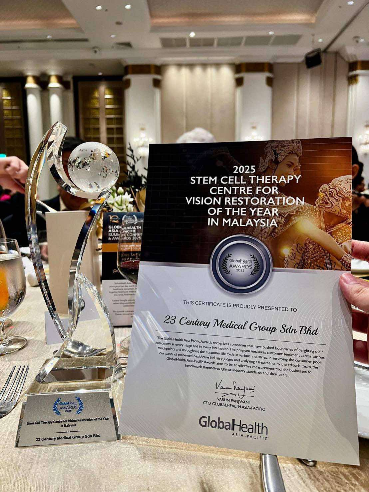

23 Century International Life Science Centre is proud to announce that, in June 2025, we were honored at the GLOBALHEALTH Asia-Pacific Summit, Conference and Awards 2025 with the title:
“2025 Stem Cell Therapy Center for Vision Restoration of the Year in Malaysia”
This prestigious award recognizes outstanding achievements in the medical field across the Asia-Pacific region, and we are deeply honored that our efforts in stem cell therapy aimed at vision restoration have been highly evaluated.
We would like to express our heartfelt gratitude to all of you for your trust and support, without which this achievement would not have been possible.
We will continue to dedicate ourselves to advancing cutting-edge regenerative medicine, contributing to the health and quality of life (QOL) of as many people as possible.
We sincerely appreciate your continued trust and patronage.
